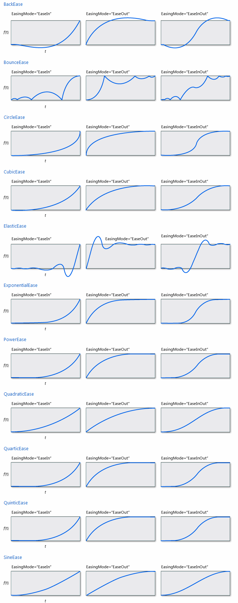

Easing Functions
There are several easing functions defined, although the user can create new ones deriving from EasingFunctionBase or directly from IEasingFunction
- BackEase: Moves the value backwards by an amount specified through its amplitude before moving forward.
- BounceEase: Creates an effect like a bouncing ball.
- CircleEase: Accelerates the animation based upon a circular function.
- CubicEase: Accelerates the animation based upon a cubic function.
- ElasticEase: Uses springiness and oscillation to animate.
- ExponentialEase: Accelerates the animation based upon an exponent value.
- PowerEase: Accelerates the animation based upon a power of X time.
- QuadraticEase: Accelerates the animation based upon the square of time.
- QuarticEase: Accelerates the animation based upon the cube of time.
- QuinticEase: Accelerates the animation based upon the time to the power of 5.
- SineEase: Accelerates the animation along a sine wave.
Each of these has it's own properties to control the values, buy all can have an EasingMode set to one of the following options:
- EaseOut: Ease takes place at the beginning of the animation.
- EaseIn: Ease takes place at the end of the animation.
- EaseInOut: EaseIn takes place for half the animation followed by EaseOut.
The following image is taken from the WPF documentation (http://msdn.microsoft.com/en-us/library/ee308751.aspx)
